การเขียนโปรแกรม MicroPython สำหรับบอร์ด BBC Micro:bit V2#
Keywords: Python 3, MicroPython, BBC Micro:bit v2 (nRF52833)
▷ ไมไครไพธอนสำหรับไมโครบิต#
บอร์ดไมโครบิต (อ่านบทความแนะนำบอร์ด Micro:bit) สามารถนำมาใช้งานได้กับเฟิร์มแวร์ของไมโครไพธอน (MicroPython) ดังนั้นผู้ใช้สามารถเขียนโค้ดด้วยภาษา Python ได้ บทความนี้จะกล่าวถึง การทดลองใช้งานไมโครไพธอนสำหรับบอร์ดไมโครบิต เจาะจงเฉพาะ "เวอร์ชัน 2" (BBC Micro:bit v2) ซึ่งมีชิป nRF52833 เป็นตัวประมวลผลหลัก
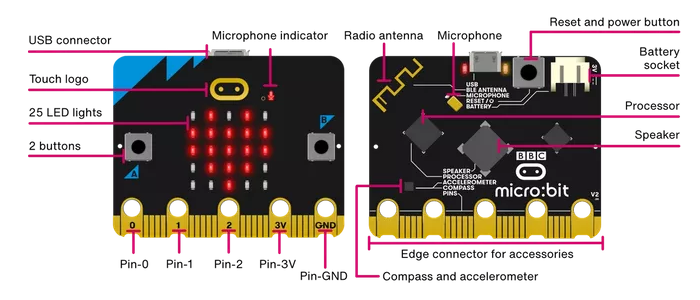
รูป: บอร์ดไมโครบิต v2
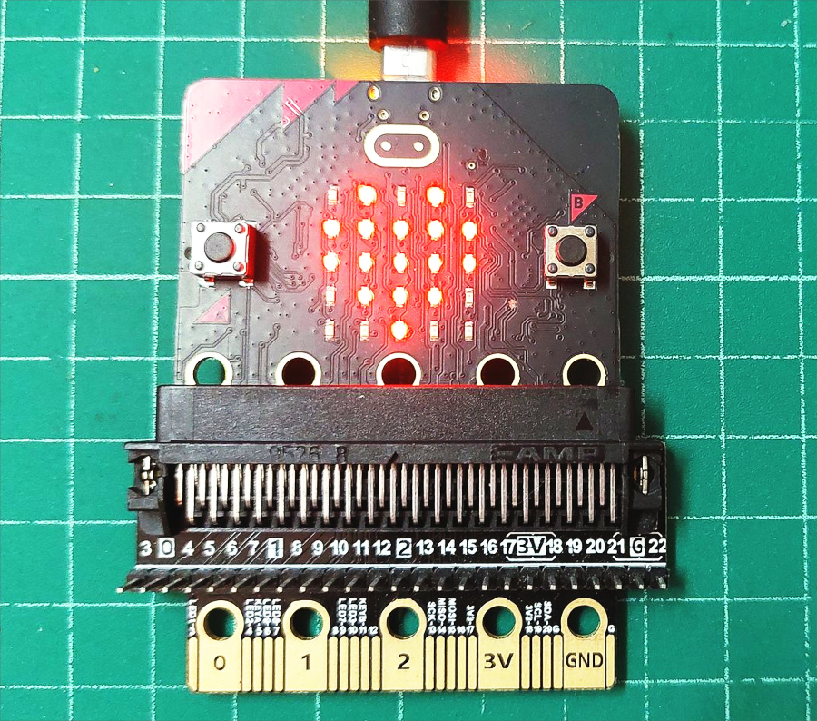
รูป: ตัวอย่างโมดูล Edge Connector ที่สามารถนำมาใช้กับบอร์ดไมโครบิต
ไฟล์เฟิร์มแวร์ของไมโครไพธอน (MicroPython Firmware: .hex) สำหรับบอร์ด MicroPython Micro:bit v2 สามารถดาวน์โหลดได้จาก
เวอร์ชันที่ได้ลองใช้ในขณะเขียนบทความนี้ คือ MicroPython for Micro:bit v2.1.1 ซึ่งใช้โค้ดของไมโครไพธอน MicroPython v1.18 เป็นพื้นฐานในการทำงาน
การติดตั้งเฟิร์มแวร์ของไมโครไพธอน ก็ทำได้ง่าย
- วิธีแรก: เมื่อเสียบสาย USB เข้ากับบอร์ดไมโครไพธอนแล้ว
จะมองเห็น USB Flash Drive ที่มีชื่อว่า
MICROBITจากนั้นให้ลากไฟล์เฟิร์มแวร์.hexไปยังไดร์ฟดังกล่าว บอร์ดไมโครบิตจะทำการติดตั้งเฟิร์มแวร์โดยอัตโนมัติ - วิธีที่สอง: เปิดใช้งาน MicroPython Editor (v3) และผู้ใช้สามารถลองเขียนโค้ดโดยใช้เว็บเบราว์เซอร์ได้ และสามารถจำลองการทำงานของโค้ดได้ โดยยังไม่จำเป็นต้องมีอุปกรณ์ฮาร์ดแวร์จริง และเมื่อเชื่อมต่อกับบอร์ดไมโครบิตกับคอมพิวเตอร์ของผู้ใช้ผ่านทางพอร์ต USB ก็สามารถติดตั้งเฟิร์มแวร์ได้เช่นกัน (ใช้วิธีการที่เรียกว่า WebUSB)
หากต้องการดูรายละเอียดเกี่ยวกับคำสั่งต่าง ๆ สำหรับการเขียนโค้ดไมโครไพธอน สามารถดูได้จาก
▷ ขั้นตอนการคอมไพล์ซอร์สโค้ด MicroPython for Micro:bit v2#
โดยปรกติแล้ว ผู้ใช้สามารถดาวน์โหลดไฟล์เฟิร์มแวร์ของไมโครไพธอนเพื่อนำมาใช้และติดตั้งใช้งานกับบอร์ดไมโครคอนโทรลเลอร์ได้ง่าย แต่สำหรับผู้ที่อยากจะลองคอมไพล์ซอร์สโค้ดของไมโครไพธอน (โดยใช้ Ubuntu Linux) ก็มีขั้นตอนดังนี้
1) ทำคำสั่งติดตั้งโปรแกรมที่จำเป็น และตรวจสอบเวอร์ชันของโปรแกรม
$ cat /etc/os-release | head -5
PRETTY_NAME="Ubuntu 22.04.2 LTS"
NAME="Ubuntu"
VERSION_ID="22.04"
VERSION="22.04.2 LTS (Jammy Jellyfish)"
VERSION_CODENAME=jammy
$ sudo apt update -y
$ sudo apt install -y python3 python3-dev
$ sudo apt install -y build-essential git mercurial cmake ninja-build
$ sudo apt install -y gcc-arm-none-eabi binutils-arm-none-eabi
$ python3 -V
Python 3.10.6
$ ninja --version
1.10.1
$ cmake --version
cmake version 3.22.1
$ arm-none-eabi-gcc --version
arm-none-eabi-gcc (15:10.3-2021.07-4) 10.3.1 20210621 (release)
2) ทำคำสั่งดาวน์โหลดซอร์สโค้ดของไมโครไพธอนสำหรับไมโครบิตจาก Github Repo
$ mkdir $HOME/MicroPython && cd $HOME/MicroPython
$ git clone https://github.com/microbit-foundation/micropython-microbit-v2
$ cd micropython-microbit-v2/
3) ทำคำสั่งดาวน์โหลดโมดูลไลบรารีต่าง ๆ ที่จำเป็นต่าง ๆ สำหรับไมโครไพธอน ได้แก่ lib/codal และ /lib/micropython
# Download the following modules
# -> https://github.com/lancaster-university/codal/
# -> https://github.com/micropython/micropython/
$ git submodule update --init
4) ทำคำสั่งเพื่อสร้างไฟล์เฟิร์มแวร์ของไมโครไพธอนสำหรับบอร์ดไมโครบิต v2
ถ้าทำได้สำเร็จ จะได้ไฟล์ MICROBIT.hex อยู่ภายใต้ไดเรกทอรี ./src
# Build the mpy-cross program
$ make -C lib/micropython/mpy-cross
# Build the MicroPython firmware for Micro:bit v2
$ cd src
$ make
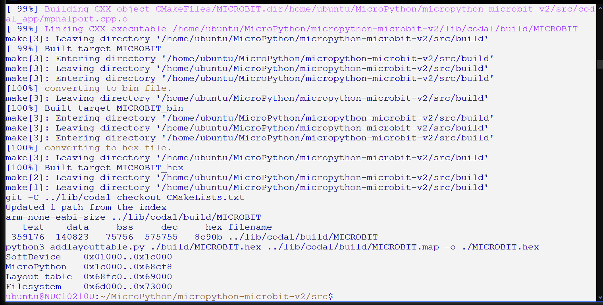
รูป: ตัวอย่างข้อความเอาต์พุต (บางส่วน) จากการทำคำสั่งเพื่อสร้างไฟล์เฟิร์มแวร์ของไมโครไพธอนสำหรับบอร์ดไมโครบิต v2
▷ การใช้งาน MicroPython Editor for Micro:bit V2#
เปิดใช้งานเว็บเบราว์เซอร์ไปยัง https://python.microbit.org/v/3
และจะเห็นได้ว่า มีการสร้างโปรเจกต์ (Project)
พร้อมโค้ดตัวอย่างไว้ให้แล้ว ซึ่งอยู่ในไฟล์ main.py ผู้ใช้สามารถกดปุ่ม Simulator
เพื่อเปิดใช้งานตัวจำลองการทำงานของโค้ด ซึ่งจะมองเห็นรูปบอร์ดไมโครบิตเสมือนจริง ถ้ากดปุ่ม Play / Run
บอร์ดไมโครบิตก็จะเริ่มทำงานตามคำสั่งของโค้ดตัวอย่าง
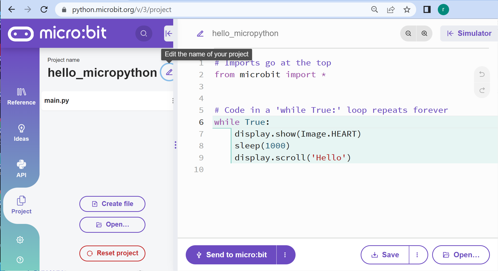
รูป: โปรเจกต์และโค้ดตัวอย่างในไฟล์ main.py เพื่อเริ่มต้นใช้งาน
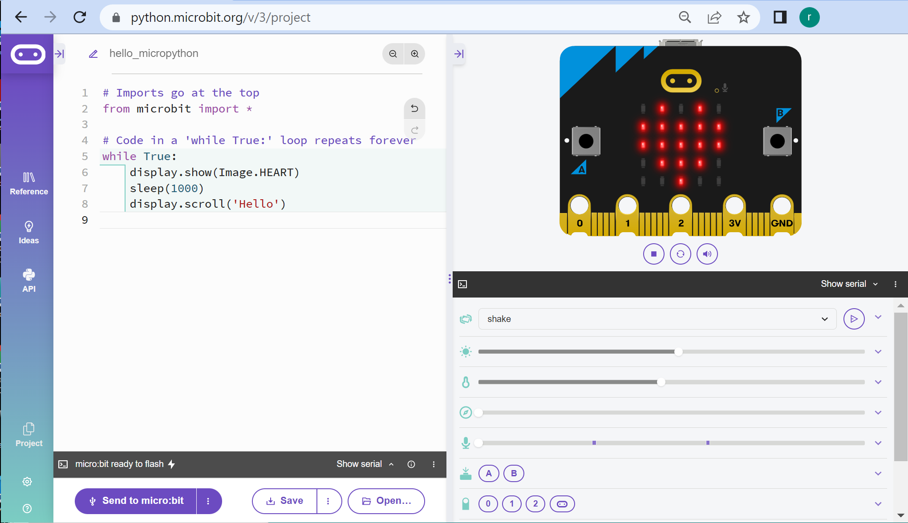
รูป: การใช้งาน Simulator เพื่อจำลองการทำงานของบอร์ดไมโครบิต
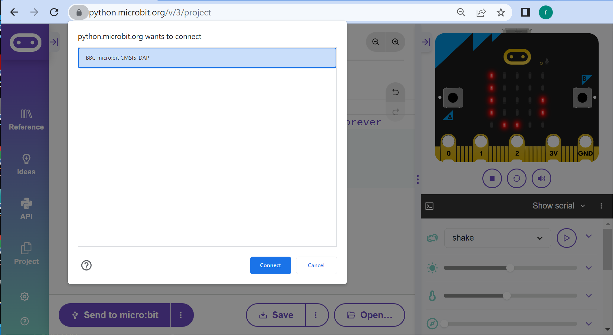
รูป: การเชื่อมต่อระหว่างบอร์ดไมโครบิตกับ MicroPython Editor ผ่านทาง WebUSB
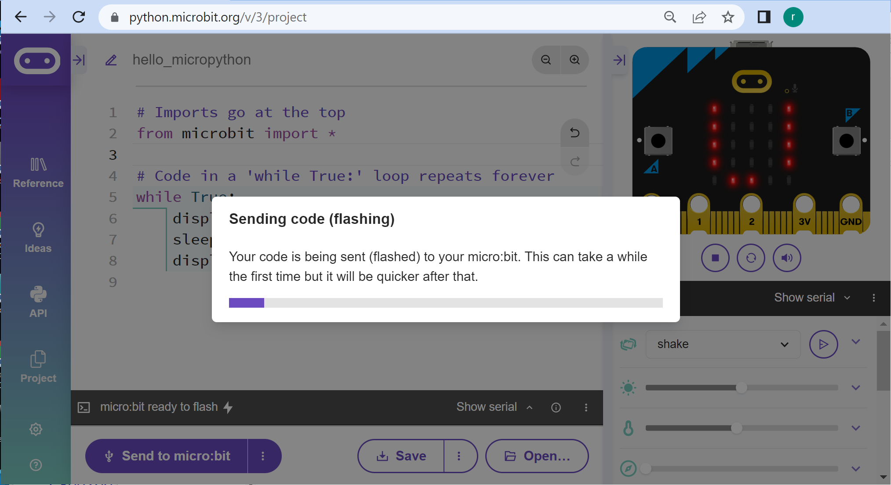
รูป: การอัปโหลดเฟิร์มแวร์และโค้ดตัวอย่างไปยังบอร์ดไมโครบิตที่เชื่อมต่อกับคอมพิวเตอร์ของผู้ใช้
ข้อสังเกต: การอัปโหลดโค้ดไปยังบอร์ดไมโครบิตในครั้งแรก จะใช้เวลานานกว่าครั้งถัดไป
เนื่องจากจะต้องมีการติดตั้งไฟล์เฟิร์มแวร์ของไมโครไพธอน (.hex) ในครั้งแรก แล้วจึงอัปโหลดโค้ดในไฟล์
main.py ไปยังระบบไฟล์ของไมโครไพธอนที่อยู่ในหน่วยความจำ Flash ของชิปไมโครคอนโทรลเลอร์
▷ โค้ดตัวอย่างที่ 1: การแสดงรูปกราฟบน 5x5 LED Matrix Display#
from microbit import *
# Code in a 'while True:' loop repeats forever
while True:
display.show( Image.HEART )
sleep( 1000 )
display.scroll( 'Hello' )
ตัวอย่างโค้ดนี้ เริ่มต้นด้วยประโยคคำสั่งในบรรทัดแรกที่จะใช้คำสั่งต่าง ๆ ของไลบรารี (หรือโมดูล) ที่มีชื่อว่า microbit
ซึ่งสามารถดูคำสั่ง คลาส และโมดูลต่าง ๆ ที่เกี่ยวข้องได้จาก
microbit
from microbit import *
ถัดไปเป็นประโยคคำสั่ง while True: ซึ่งจะทำคำสั่งภายในบล็อกของโค้ดที่เกี่ยวข้องซ้ำไปเรื่อย ๆ ได้แก่
display.show(Image.HEART)ที่แสดงรูปสัญลักษณ์ "หัวใจ" (Heart) บนจอแสดงผลแบบ 5x5 LED Matrix ของบอร์ดไมโครบิต- ถัดไปเป็นคำสั่ง
sleep(1000)เพื่อหน่วงเวลาไว้ประมาณ 1000 มิลลิวินาที - ทำคำสั่ง
display.scroll('Hello')ที่จะแสดงข้อความHelloบนส่วนที่แสดงผลแบบเมทริกซ์ขนาด 5x5 LEDs และให้ข้อความดังกล่าว เลื่อนไปทางซ้ายจนครบทุกตัวอักขระ
ในภาษาไพธอน ข้อความใด ๆ ที่ตามหลังสัญลักษณ์ # ในบรรทัดเดียวกัน
จะถือว่าเป็นคำอธิบายโค้ด (Code Comment) ไม่มีผลต่อการทำงานของโค้ด
ถ้าต้องการบันทึกไฟล์ main.py มายังคอมพิวเตอร์ของผู้ใช้
ให้กดปุ่ม Save ... Save Python script
(แต่ถ้ากดปุ่ม Save จะได้ไฟล์ .hex)
ไฟล์ .py ที่ได้ดาวน์โหลดมา สามารถนำไปเปิดใช้งานได้อีกครั้งใน MicroPython Editor
บนหน้าเว็บเบราว์เซอร์ โดยกดปุ่ม Open แล้วคลิกเลือกไฟล์ที่ต้องการเปิดใช้งานและอยู่ในเครื่องคอมพิวเตอร์ของผู้ใช้
ข้อสังเกต: Image.HEART ในคลาส Image ได้มีการกำหนดค่าพิกเซลไว้แล้ว
สำหรับการแสดงรูปสัญลักษณ์ "หัวใจ" ด้วยคำสั่ง display.show(...) และรูปสัญลักษณ์อื่นที่สามารถเลือกใช้ได้
สามารถดูรายการได้จาก
Images เช่น
รูปกราฟิกแสดงอารมณ์ความรู้สึก
Image.HAPPY(รู้สึกมีความสุข)Image.SMILE(รูปหน้ายิ้ม)Image.SAD(รู้สึกเศร้า)Image.ANGRY(รู้สึกโกรธ)Image.SURPRISED(รู้สึกประหลาดใจ)
▷ โค้ดตัวอย่างที่ 2#
โค้ดตัวอย่างถัดไปสาธิตการใช้คำสั่งจากโมดูล machine และ gc เช่น
machine.unique_id()อ่านค่าหมายเลขของบอร์ด (Unique Board ID) ซึ่งจะได้เป็นอาร์เรย์ของข้อมูลไบต์machine.freq()อ่านค่าความถี่ของซีพียูที่ใช้ในการประมวลผล (หน่วยเป็น Hz)gc.enable()เปิดใช้งานการตรวจสอบและจัดการหน่วยความจำประเภท Heapgc.mem_alloc()ตรวจสอบดูว่า มีหน่วยความจำประเภท Heap ถูกใช้ไปแล้วกี่ไบต์gc.mem_free()ตรวจสอบดูว่า มีหน่วยความจำประเภท Heap ที่ยังไม่ได้ใช้เหลืออยู่กี่ไบต์gc.collect()ตรวจสอบและทำการคืนพื้นที่ของหน่วยความจำใน Heap ที่มีการนำไปใช้งานเมื่อทำคำสั่งต่าง ๆ ของโปรแกรม แต่ไม่ได้ใช้แล้ว
import machine
import gc
# Enable automatic garbage collection (GC)
gc.enable()
# Show the free heap memory (in bytes)
print( "Heap memory (free): %d" % gc.mem_free())
# Get free heap memory (in bytes)
heap_free = gc.mem_free()
# Set the threshold for the GC: a half of free heap memory
threshold = heap_free//2
gc.threshold(threshold)
# Get the threshold for GC
print( "GC threshold: %d" % gc.threshold() )
# Get the machine ID (a bytearray, converted to a hex string)
id = "".join([hex(b)[2:] for b in machine.unique_id()] )
print( "Board ID: %s" % id)
# Get the CPU frequency in MHz
print( "CPU freq:. %d MHz" % int(machine.freq()/1e6) )
# Get the allocated heap memory (in bytes)
print( "Heap memory (allocated): %d bytes" % gc.mem_alloc() )
# Run a garbage collector to free some heap memory
gc.collect()
# Show the free heap memory (in bytes)
print( "Heap memory (free): %d" % gc.mem_free() )
ถ้าอัปโหลดโค้ดตัวอย่างนี้ไปยังบอร์ดไมโครบิต (กดปุ่ม Send to micro:bit)
แล้วเปิดรับข้อความผ่านทาง Serial (กดปุ่ม show | hide serial)
จะมองเห็นข้อความเอาต์พุตจากการทำงานของไมโครไพธอน
ส่วนที่รับส่งข้อความได้เรียกว่า MicroPython REPL ผู้ใช้สามารถพิมพ์และทำคำสั่งของไมโครไพธอนได้
ถ้ากดปุ่ม Ctrl+D เป็นการรีเซตการทำงานของไมโครไพธอน แต่ถ้ากดปุ่ม Ctrl+C
เป็นการหยุดการทำงานของไมโครไพธอนในขณะที่กำลังทำคำสั่งในไฟล์ main.py
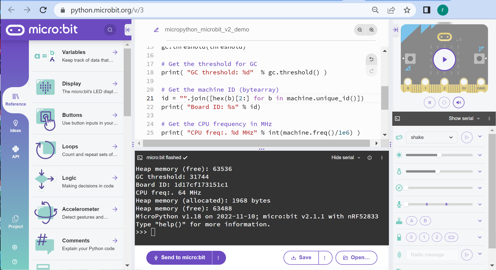
รูป: ตัวอย่างข้อความเอาต์พุตที่ได้รับจากบอร์ดไมโครบิตผ่านทาง WebUSB - Serial
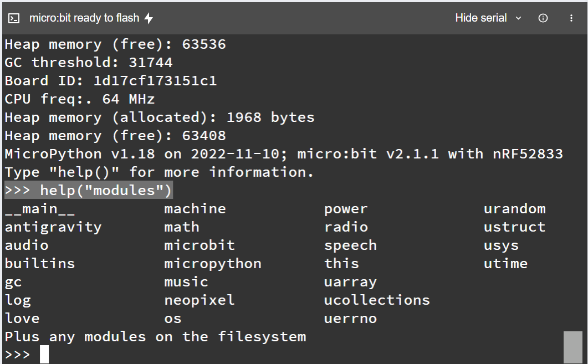
รูป: ตัวอย่างการทำคำสั่ง help("modules") ในช่อง MicroPython REPL
การใช้ฟังก์ชันสำหรับการเขียนโค้ดไมโครบิต ได้มีการแบ่งออกเป็นกลุ่มคำสั่งดังนี้
microbit
accelerometer
audio
bluetooth
button
compass
log
display
filesystem
i2c
image
machine
microphone
music
neopixel
power
radio
random
speaker
speech
spi
uart
utime
▷ โค้ดตัวอย่างที่ 3#
โค้ดตัวอย่างถัดไปสาธิตการใช้คำสั่งของโมดูล microbit เช่น
microbit.display.set_pixel( x, y, brightness )เพื่อกำหนดค่าของพิกเซลที่ตำแหน่ง(x,y)บนแผงแสดงผลแบบเมทริกซ์ 5x5 พิกเซล และให้มีค่าbrightnessอยู่ในช่วง 0..9 ซึ่งเป็นระดับของความสว่างของ LED ที่ตำแหน่งดังกล่าวmicrobit.display.clear()กำหนดให้ค่าพิกเซลทั้งหมดเป็น 0
from microbit import *
# Set brightness to 9 (maximum).
brightness = 9
while True:
# For each position: 0..24
for pos in range(25):
# Compute the (x,y) coordinate from the position value.
y = pos // 5 # row index
x = pos % 5 # column index
# Turn on the pixel at (x,y).
display.set_pixel( x, y, brightness )
sleep( 100 )
# Clear the LED matrix display.
display.clear()
▷ โค้ดตัวอย่างที่ 4#
โค้ดตัวอย่างถัดไปสาธิตการใช้คำสั่งของโมดูล random และ microbit เช่น
microbit.pin0.read_analog()อ่านค่าตัวเลขจำนวนเต็มจากขา P0 ของไมโครบิต เมื่อใช้งานเป็นขาแอนะล็อก-อินพุตrandom.seed( value )กำหนดค่าเริ่มต้น (Seed Value) เพื่อใช้งานการสร้างตัวเลขจำนวนเต็มแบบสุ่มrandom.randint( m, n )สร้างเลขสุ่มที่เป็นเลขจำนวนเต็มที่มีค่าอยู่ในช่วงmถึงn
โค้ดในตัวอย่างนี้ เริ่มต้นด้วยการกำหนดค่าที่เรียกว่า Seed Value สำหรับการสร้างเลขสุ่ม โดยใช้ค่าที่ได้จากการอ่านขาอินพุตแบบแอนะล็อกที่ขา P0 แต่ไม่ได้ต่อใช้งาน (และอาจมีการใช้นิ้วมือสัมผัสที่บริเวณ Pad ของขาดังกล่าว)
ถัดจากนั้นจะสุ่มตัวเลขสำหรับพิกัด (x,y) ในช่วงตัวเลข 0 ถึง 4 และความสว่าง brightness
(เลือกตัวเลขให้อยู่ในช่วง 3 ถึง 9) เพื่อทำให้พิกเซลที่พิกัดดังกล่าวสว่างขึ้น
ถ้ามีค่าเดิมของพิเซลนั้นเป็น 0
from microbit import *
import random
# Use the analog value read from Pin0 to
# set the seed for the pseudo-random number generator.
value = pin0.read_analog()
random.seed( value )
on_pixel_count = 0
display.clear()
while True:
# Select randomly a value from 0..4 for x and y, respectively.
x = random.randint( 0, 4 )
y = random.randint( 0, 4 )
# Select randomly a value from 3..9 for the LED brightness.
brightness = random.randint( 3, 9 )
# Check whether the LED at (x,y) is OFF.
if display.get_pixel(x,y) == 0:
print( 'Turn on the pixel (%d,%d)' % (x,y) )
display.set_pixel(x, y, brightness)
on_pixel_count += 1
if on_pixel_count == 25:
print( 'Clear LED matrix display' )
display.clear()
on_pixel_count = 0
sleep(100)
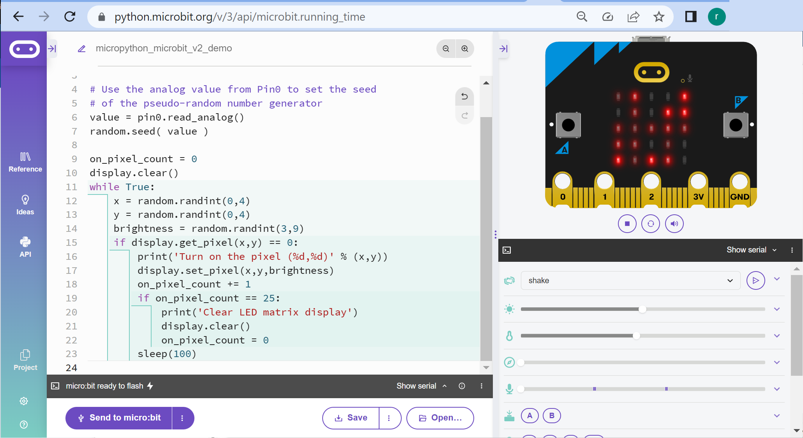
รูป: ตัวอย่างการจำลองการทำงานของโค้ด
▷ โค้ดตัวอย่างที่ 5#
โค้ดตัวอย่างถัดไปสาธิตการแสดงค่าพิกเซลบนแผงแสดงผลแบบเมทริกซ์ (LED Matrix Display)
ขนาด 5x5 โดยการสุ่มค่าตัวเลขที่ได้กำหนดไว้แล้วในอาร์เรย์ bits เพื่อสร้างเป็นรูปกราฟิก
(Image) และใช้ในการแสดงผล
การสุ่มค่าพิกเซลและอัปเดตสถานะจะเกิดขึ้นเมื่อมีการเขย่าบอร์ดไมโครบิต
ในการตรวจสอบเหตุการณ์ดังกล่าว จะใช้คำสั่ง accelerometer.was_gesture('shake')
แต่ถ้าไม่มีการเขย่า ระดับความสว่าง (LED Brightness)
หรือค่าของพิกเซลที่มีค่ามากกว่า 0 จะค่อย ๆ ลดลงเป็น 0
การอ่านและกำหนดค่าของพิกเซลที่พิกัด (x,y) จะใช้คำสั่งต่อไปนี้
display.get_pixel(x,y)display.set_pixel(x,y,brightness)
from microbit import *
import random
bits = ["90000", "09000", "00900", "00090", "00009"]
def shuffle( choices ):
n = len(choices)
result = []
while True:
p = random.randint(0,n-1)
if choices[p] not in result:
result.append(choices[p])
if len(result) == n:
break
return result
def reduce_brightness():
for x in range(5):
for y in range(5):
brightness = display.get_pixel(x,y)
if brightness > 0:
display.set_pixel(x,y,brightness-1)
last_update = running_time()
while True:
if accelerometer.was_gesture('shake'):
bits = shuffle( bits )
display.show( Image( ":".join(bits) ) )
else:
now = running_time()
if now - last_update >= 200:
last_update = now
reduce_brightness()
หากจะแสดงรูปกราฟิก โดยเปลี่ยนไปตามระยะเวลาที่กำหนด เช่น แสดงรูปหัวใจขนาดปรกติ
(Image.HEART) และขนาดเล็กลง (Image.HEART_SMALL) ก็มีตัวอย่างดังนี้
from microbit import *
# Create an array of two Image objects.
images = [ Image.HEART, Image.HEART_SMALL ]
# Add an additional Image object (single-dot image).
images.append(
Image('00000:'
'00000:'
'00900:'
'00000:'
'00000') )
while True:
for image in images:
display.show(image)
sleep(250)
หรือเขียนโค้ดในอีกรูปแบบหนึ่งดังนี้ ก็ได้ผลเหมือนกัน
from microbit import *
# Create an array of three Image objects.
images = [
Image('09090:99999:99999:09990:00900'), # Heart
Image('00000:09090:09990:00900:00000'), # Small Heart
Image('00000:00000:00900:00000:00000') # Single Centered Dot
]
while True:
for image in images:
display.show(image)
sleep(250)
▷ โค้ดตัวอย่างที่ 6#
โค้ดตัวอย่างถัดไปสาธิตการใช้คำสั่งของโมดูล microbit เช่น
microbit.temperature()อ่านค่าอุณหภูมิภายในชิปไมโครคอนโทรลเลอร์ (หน่วยเป็นองศาเซลเซียส)microbit.running_time()อ่านค่าเวลาของระบบตั้งแต่ไมโครไพธอนเริ่มทำงาน (หน่วยเป็นมิลลิวินาที)microbit.sleep(...)หยุดรอให้เวลาผ่านไปตามาระยะเวลาที่กำหนด (หน่วยเป็นมิลลิวินาที)microbit.run_every(...)เปิดให้มีการเรียกฟังก์ชันซ้ำไปเรื่อย ๆ เว้นระยะเวลาตามที่กำหนดไว้ (หน่วยเป็นมิลลิวินาที)microbit.button_a.was_pressed()ตรวจสอบดูว่า ได้มีการกดปุ่ม A บนบอร์ดไมโครบิตหรือไม่microbit.display.show(...)แสดงสัญลักษณ์ เช่นImage.HEARTหรือ รูปหัวใจบนเมทริกซ์ของ LEDs ขนาด 5x5microbit.display.clear()เคลียร์การแสดงผลบนแผงเมทริกซ์ LEDs ขนาด 5x5
from microbit import *
# Read on-chip temperature
temp_celsius = temperature()
print( "CPU temperature: %d deg°C" % temp_celsius )
blinking = True
def heart_blink():
global blinking
if blinking: # If heart blinking is enabled...
# show elapsed time in msec
print("Timestamp: %d msec" % running_time() )
display.show(Image.HEART)
sleep(500)
display.clear()
# Start a periodic task which calls the heart_blink() function
# every 1000 msec.
run_every(heart_blink, ms=1000)
while True:
if button_a.was_pressed():
print("Button A was pressed.")
# Toggle the blinking status
blinking = not blinking
sleep(1000)
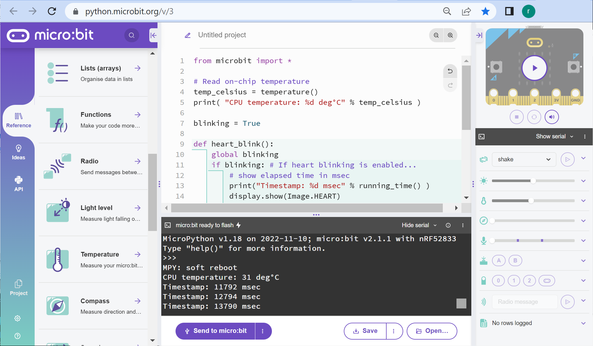
รูป: ตัวอย่างข้อความเอาต์พุตที่ได้รับจากบอร์ดไมโครบิตผ่านทาง Serial
▷ โค้ดตัวอย่างที่ 7: การตรวจสอบการตั้งขึ้นของบอร์ดไมโครบิต#
ถ้าจะแสดงรูปลูกศร (Arrows) ซึ่งมีทิศทางทั้งหมด 8 ทิศ แล้วให้แสดงรูปสัญลักษณ์ลูกศรไปตามลำดับ ก็มีตัวอย่างโค้ดดังนี้
from microbit import *
# Create an array of Image objects.
images = Image.ALL_ARROWS # There are 8 arrow images in total.
print( "Number of arrows: %d" % len(images) )
while True:
for image in images:
display.show(image)
sleep(200)
ถัดไปลองเขียนโค้ดใหม่ โดยกำหนดเงื่อนไขว่า ถ้าบอร์ดอยู่ในแนวตั้งฉากกับระนาบหรือพื้นราบ แล้วให้แสดงสัญลักษณ์ Arrow หรือ ลูกศรในทิศทางชี้ลงพื้น ก็มีตัวอย่างการเขียนโค้ดดังนี้ เริ่มต้นด้วยการอ่านค่าจากเซนเซอร์วัดความเร่งแบบสามแกน (3-axis Accelerometer) ของบอร์ดไมโครบิตในแกน x, y, z ตามลำดับ โดยใช้คำสั่งต่อไปนี้
accelerometer.get_x()accelerometer.get_y()accelerometer.get_z()
ค่าที่อ่านได้ในแต่ละแกน จะอยู่ในช่วง +/-2g และได้เป็นเลขจำนวนเต็มในช่วง -2000 .. +2000 (มีหน่วยเป็น milli-g หรือ หนึ่งในพันของค่า ) แล้วนำมาเปรียบเทียบค่าตามเงื่อนไขที่ได้กำหนดไว้เป็นตัวอย่าง
from microbit import *
while True:
# Read data from the 3-axis accelerometer.
x = accelerometer.get_x()
y = accelerometer.get_y()
z = accelerometer.get_z()
print( "Accel %d %d %d" % (x,y,z) )
if abs(x) < 250 and y > 750 and abs(z) < 250:
display.show( Image.ARROW_S)
else:
display.clear()
sleep(200)
หรือจะลองเปรียบเทียบกับการใช้คำสั่ง accelerometer.current_gesture()
ซึ่งจะได้ข้อความระบุทิศทางของบอร์ดไมโครบิต เช่น
"up", "down", "left", "right", "face up", "face down"
เป็นต้น และนำมาตรวจสอบในเงื่อนไขดูว่า ตรงกับ "up" (บอร์ดอยู่ในลักษณะ "ตั้งขึ้น") หรือไม่
from microbit import *
while True:
x = accelerometer.get_x()
y = accelerometer.get_y()
z = accelerometer.get_z()
print( "Accel %d %d %d" % (x,y,z) )
gesture = accelerometer.current_gesture()
if gesture == "up":
display.show( Image.ARROW_S )
else:
display.clear()
sleep(200)
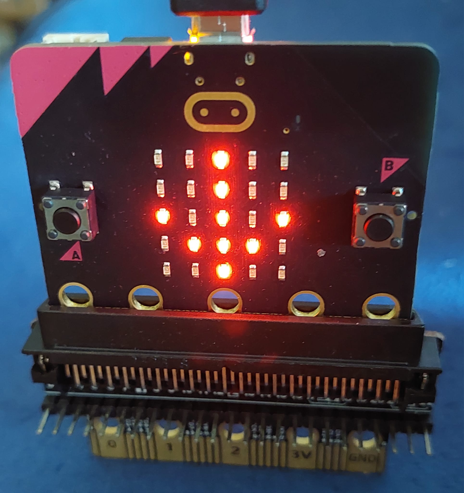
รูป: บอร์ดไมโครบิตแสดงรูปกราฟิกเป็นสัญลักษณ์ "ลูกศรชี้ลง"
▷ โค้ดตัวอย่างที่ 8: การสร้างสัญญาณเสียงดนตรี (Melody Sound Effect)#
บอร์ดไมโครบิต เวอร์ชันสอง มีวงจรสร้างสัญญาณเสียง (Speaker)
และสำหรับการเขียนโค้ดด้วยไมโครไพธอน ก็มีคำสั่งในโมดูล
audio และ
speaker
ให้ใช้งาน เช่น การสร้างสัญญาณเสียงดนตรีเป็นเมโลดี้ และมีการสร้างเสียงตัวอย่าง (Builtin Sound Effects) ไว้แล้ว เช่น
Sound.GIGGLESound.HAPPYSound.HELLOSound.MYSTERIOUSSound.SADSound.SLIDESound.SOARINGSound.SPRINGSound.TWINKLESound.YAWN
โค้ดตัวอย่างต่อไปนี้ สาธิตการสร้างสัญญาณเสียงดนตรี เมื่อมีการเขย่าบอร์ด และสุ่มเลือกจากรายการเสียงดนตรีในอาร์เรย์
from microbit import *
from random import choice
sound_list = [ Sound.GIGGLE, Sound.HAPPY, Sound.HELLO,
Sound.MYSTERIOUS, Sound.SAD, Sound.SLIDE, Sound.SOARING,
Sound.SPRING, Sound.TWINKLE, Sound.YAWN ]
# Turn on speaker
speaker.on()
while True:
if accelerometer.was_gesture("shake"):
sound = choice(sound_list)
audio.play( sound )
ถ้าจะลองสร้างเสียงเป็นสัญญาณแจ้งเตือน (Alarm Sound)
ก็ลองใช้คำสั่งเพื่อสร้างชุดข้อมูลเสียงในรูปแบบของ AudioFrame (ข้อมูลเสียงหนึ่งเฟรม)
ซึ่งจะประกอบด้วยข้อมูลขนาด 8 บิต (Unsigned Bytes) จำนวน 32 ตัวเลข
ในโค้ดตัวอย่างต่อไปนี้ มีการสร้างฟังก์ชัน audio_frame() เพื่อกำหนดค่าให้ข้อมูลในหนึ่งเฟรม
โดยใช้รูปแบบฟังก์ชันรูปคลื่นไซน์
from microbit import *
import math
# Turn on speaker
speaker.on()
# Create an AudioFrame object with 32 unsigned bytes.
def audio_frame(f=11):
frame = audio.AudioFrame()
n = len(frame)
for i in range(n):
value = int(127.5*(1+math.sin(math.pi*f*i/16)))
frame[i] = value
return frame
# Create a list of 64 audio frames
samples = [ audio_frame(11)] * 64
alarm = True # Enable sound alarm.
while True:
# Press the button A to enable/disable alarm.
if button_a.was_pressed():
alarm = not alarm # Toggle alarm mode.
if alarm:
audio.play( samples ) # Play sound effect.
sleep(1000)
▷ โค้ดตัวอย่างที่ 9: การวัดระดับเสียง (Ambient Sound Level Measurement)#
ถ้าจะลองอ่านค่าอินพุตจากไมโครโฟนของบอร์ดไมโครบิต ก็มีคำสั่งจากโมดูล
microphone ของ microbit ให้ใช้งาน
ลองมาดูตัวอย่างถัดไปซึ่งสาธิตการวัดระดับเสียงด้วยไมโครโฟนของบอร์ดไมโครบิต
โดยใช้คำสั่ง microbit.microphone.sound_level()
แล้วแสดงระดับเสียงที่วัดได้ โดยใช้รูปกราฟิกบนส่วนแสดงผล 5x5 LED Matrix
from microbit import *
SQUARE_LARGE = Image.SQUARE_SMALL + Image.SQUARE
while True:
sound_level = microphone.sound_level()
display.clear()
if sound_level < 5:
display.set_pixel( 2, 2, 9 )
elif sound_level < 20:
display.show( Image.SQUARE_SMALL )
elif sound_level < 40:
display.show( Image.SQUARE )
else:
display.show( SQUARE_LARGE )
sleep(50)
▷ โค้ดตัวอย่างที่ 10: การใช้งานโมดูล NeoPixel / RGB LED (WS2812B)#
โค้ดในตัวอย่างนี้สาธิตการกำหนดสีแบบ RGB (สีแดง-เขียว-น้ำเงิน) ให้กับโมดูลที่เรียกว่า "NeoPixel" ซึ่งใช้ชิป WS2812B เป็นตัวควบคุมและให้แสงจาก RGB LED โดยเลือกใช้เพียงหนึ่งพิกเซลเท่านั้น
โมดูล NeoPixel สามารถใช้แรงดันไฟเลี้ยง +3.3V (ขา 3V) จากบอร์ดไมโครบิตได้ (ถ้ามีจำนวนพิกเซลไม่มากและใช้ปริมาณกระแสน้อย โดยรวมไม่เกิน 100mA)
ในการต่อวงจร ได้เลือกใข้ขา Pin0 เป็นขา GPIO นำไปเชื่อมต่อกับขา DIN (Data Input) ของ WS2812B เพื่อใช้ในการส่งข้อมูลบิตจำนวน (24 บิต) และกำหนดสี RGB (อย่างละ 8 บิต) ให้กับโมดูลดังกล่าว
ในการเขียนโค้ดไมโครไพธอน เพื่อกำหนดสีให้พิกเซลของ NeoPixel ก็มีคำสั่งจากโมดูล neopixel
และคลาสชื่อ NeoPixel ให้ใช้งานได้
from microbit import *
import neopixel
# Use Pin0 to control the NeoPixel module
NEOPIXEL_PIN = pin0
# Use a single-pixel NeoPixel module
NUM_PIXELS = 1
# Create a NeoPixel object
# and use bpp=3 for RGB mode (red,green,blue)
np = neopixel.NeoPixel(NEOPIXEL_PIN, NUM_PIXELS, bpp=3)
np.clear()
# Create a list of three predefined colors (tuples)
colors = [ (255,0,0), (0,255,0), (0,0,255) ]
while True:
for color in colors:
# Set the new color
np.fill( color )
# Send the color bits to NeoPixel
np.write()
sleep(1000)
ถ้าจะลองกำหนดสี RGB แบบสุ่มตัวเลขจำนวนเต็มในช่วง 0 ถึง 255 จากเซตหรืออาร์เรย์ของค่าตัวเลข เช่น [255, 191, 127, 63, 31, 0] ก็มีแนวทางดังนี้
from microbit import *
import neopixel
from random import *
# Use Pin0 to control the NeoPixel module
NEOPIXEL_PIN = pin0
# Use a single-pixel NeoPixel module
NUM_PIXELS = 1
# Create a NeoPixel object
# and use bpp=3 for RGB mode (red,green,blue)
np = neopixel.NeoPixel(NEOPIXEL_PIN, NUM_PIXELS, bpp=3)
np.clear()
# Create a lambda function to randomly select a value from a list.
rand_value = lambda choices: choices[randrange(0,len(choices))]
# Create a list of predefined values
values = [255,191,127,63,31,0]
while True:
# Select random values for RGB
red = rand_value( values )
green = rand_value( values )
blue = rand_value( values )
# Write a tuple of RGB value to the pixel buffer
np[0] = color = (red,green,blue)
print( color )
# Update the color of the NeoPixel module
np.write()
sleep(1000)
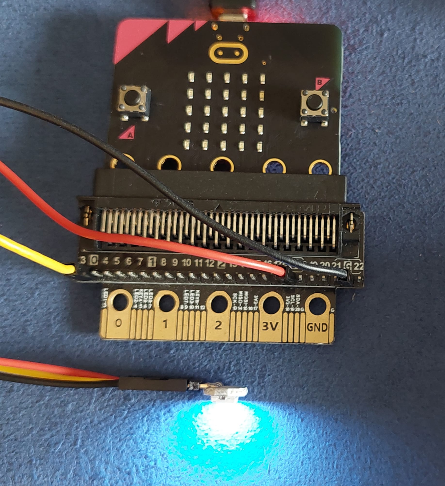
รูป: ตัวอย่างการใช้งานโมดูล NeoPixel / WS2812B ร่วมกับบอร์ดไมโครบิต
ถ้าจะลองเปลี่ยนมาใช้โมดูล RGB แบบที่ไม่ใช้ไอซี WS2812B แต่มีขาควบคุม 3 ขา ก็จะต้องใช้วิธีการสร้างสัญญาณเอาต์พุตแบบ PWM (Pulse Width Modulation) ซึ่งเป็นสัญญาณดิจิทัลที่มีความถี่หรือคาบคงที่ แต่ปรับเลือกความกว้างของพัลส์ช่วงที่มีลอจิกเป็น High ได้ (High Pulse Width ก็คือ ความกว้างของพัลส์ช่วงที่มีลอจิกเป็น High หรือมีค่าลอจิกเป็น 1)
ในตัวอย่างนี้ ได้เลือกใช้ขา Pin0, Pin1, Pin2 สำหรับการสร้างสัญญาณที่มีรูปแบบ PWM จำนวน 3 ช่องสัญญาณ (สำหรับแต่ละสีของ RGB) แล้วนำไปใช้กับโมดูล RGB ที่ทำงานงานแบบ Active-High ความกว้างของพัลส์ของสัญญาณ PWM ทั้งสามช่อง จะเป็นตัวกำหนดระดับความสว่างของแต่ละสี และเกิดการผสมสี RGB ที่แตกต่างกันได้
ตัวอย่างการเขียนโค้ดไมโครไพธอนมีดังนี้ โดยจะสุ่มตัวเลขจำนวนเต็มในช่วง 0..1023 (ความละเอียดเท่ากับ 10 บิต)
จากอาร์เรย์ที่ได้กำหนดค่าไว้เป็นตัวอย่าง (ใช้คำสั่ง random.choice())
แล้วนำไปใช้กำหนดค่าที่เรียกว่า Pulse Width ของสัญญาณ PWM โดยใช้คำสั่ง write_analog(...)
ของแต่ละขา GPIO ที่ได้เลือกมาใช้งาน
from microbit import *
import neopixel
import random
# Specify the GPIO pins for PWM outputs
RGB_PINS = [pin0,pin1,pin2]
# A list of predefined PWM values (10-bit): 0..1023
values = [1023,511,255,0]
while True:
for pin in RGB_PINS:
# Choose randomly a value from the list
value = random.choice( values )
# Update the PWM pin
pin.write_analog( value )
sleep(1000)
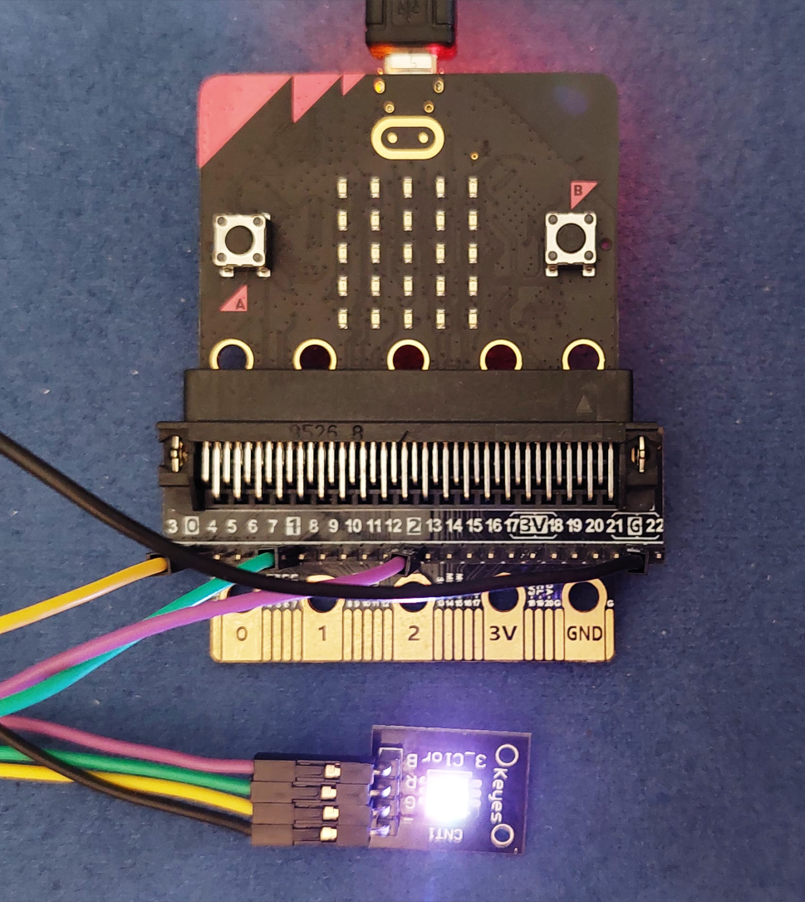
รูป: ตัวอย่างการใช้งานโมดูล RGB LED ร่วมกับบอร์ดไมโครบิต
▷ โค้ดตัวอย่างที่ 11: การอ่านค่าจากโมดูล Rotary Encoder#
ตัวอย่างถัดไปสาธิตการอ่านค่าจากโมดูล Rotary Encoder ซึ่งจะได้สัญญาณแบบพัลส์ จำนวน 2 ช่อง เมื่อมีการหมุนเปลี่ยนตำแหน่งของด้ามจับหรือแกนหมุน (Rotating Shaft) สัญญาณทั้งสองช่อง (ตั้งชื่อว่า A และ B) จะมีลักษณะต่างเฟสกันประมาณ 90 องศา ความกว้างของพัลส์จะขึ้นอยู่กับความเร็วในการหมุนที่ด้ามจับของโมดูล
การตรวจสอบการเปลี่ยนแปลงของพัลส์ สามารถใช้คำสั่ง
machine.time_pulse_us(...)
เพื่อวัดความกว้างของพัลสที่เกิดขึ้นและมีค่าลอจิกเป็น High ได้ (ค่า Pulse Level เท่ากับ 1)
ค่าที่วัดได้จะมีหน่วยเป็นไมโครวินาที
และสามารถกำหนดระยะเวลาสูงสุดในการรอให้เกิดพัลส์ได้ (เช่น กำหนดค่า Timeout ให้ไม่เกิน 50000 ไมโครวินาที)
ในการตรวจสอบการเกิดการพัลส์ในแต่ละครั้งจากโมดูล Rotary Encoder จะเลือกใช้สัญญาณจากขา A
และดูว่า สัญญาณที่ขา B มีค่าลอจิกเป็นอย่างไรเมื่อเกิดเหตุการณ์ดังกล่าว แล้วนำมากำหนดเป็นเงื่อนไข
เพื่อเพิ่มหรือลดค่าของตัวแปรที่เป็นตัวนับ (count) และให้มีค่าอยู่ในช่วง 0..9 เท่านั้น
ในโค้ดตัวอย่างนี้ได้เลือกใช้ขา Pin12 และ Pin16 นำไปต่อกับขา A และ B ของโมดูล Rotary Encoder ตามลำดับ และใช้แรงดันไฟเลี้ยง 3.3V จากบอร์ดไมโครบิต
from microbit import *
import machine
from micropython import const
import time
# Set min. and max. pulse width values.
PW_MIN = const(5000) # value in microseconds
PW_MAX = const(50000) # value in microseconds
# Use Pin12 and Pin12 for A and B signals respectively.
PIN_A = pin12
PIN_B = pin16
# Disable pull-up/pull-down on the A and B pins.
PIN_A.set_pull( PIN_A.NO_PULL )
PIN_B.set_pull( PIN_B.NO_PULL )
MAX_COUNT = 10
count = 0
display.show( str(count) )
while True:
# Measure the pulse width (with timeout).
t_pw = machine.time_pulse_us( PIN_A, 1, PW_MAX )
# Detect a pulse with a valid pulse width.
if t_pw >= PW_MIN and t_pw < PW_MAX:
if PIN_B.read_digital():
# Increment the counter value.
count = count+1
else:
# Decrement the counter value.
count = count-1
# Limit the counter value to 0..(MAX_COUNT-1).
count = (MAX_COUNT+count) % MAX_COUNT
# Send the counter value as a string to the serial.
print(count)
# Show the digit on the LED matrix display.
display.show( str(count) )
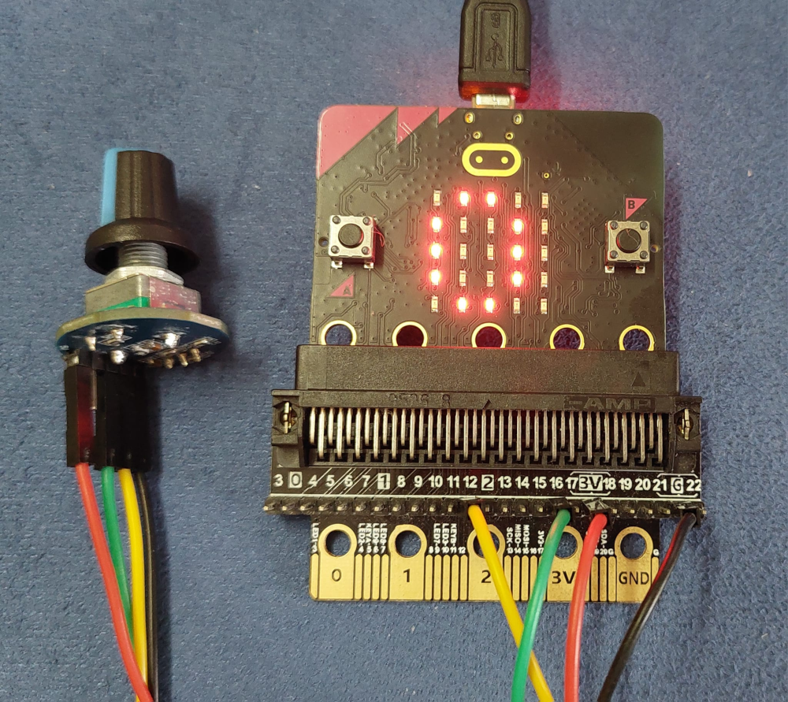
รูป: ตัวอย่างการต่อวงจรใช้งานโมดูล Rotary Encoder ร่วมกับบอร์ดไมโครบิต
▷ ตัวอย่างโค้ดไมโครไพธอน#
นอกจากโค้ดตัวอย่างเพื่อการสาธิตการเขียนไมโครไพธอนสำหรับไมโครบิตและได้นำเสนอไปแล้วนั้น ก็มีไฟล์ตัวอย่างโค้ดเอาไว้ศึกษาเพิ่มเติมดังต่อไปนี้
demo_show_all_predefined_images.py: แสดงรูปกราฟิกของไมโครไพธอนบนส่วนแสดงผลแบบ 5x5 LED Matrixdemo_dice_shake.py: ตรวจสอบการเขย่าบอร์ด แล้วแสดงสัญลักษณ์เหมือนการทอยลูกเต๋าอิเล็กทรอนิกส์ ซึ่งมีค่าที่เป็นไปได้ 1-6demo_create_chessboard_image.py: กำหนดค่าให้พิกเซลบน 5x5 LED Matrix ที่มีลักษณะเหมือนตารางหมากรุกdemo_draw_lower_upper_triangular_matrix.py: แสดงรูปกราฟิกบนส่วนแสดงผลแบบ 5x5 LED Matrix ที่มีลักษณะเป็นเมทริกซ์สามเหลี่ยมล่างหรือเมทริกซ์สามเหลี่ยมบนdemo_buttons_touch_logo_rotate_arrow.py: ตรวจสอบการสัมผัสที่บริเวณ Logo หรือ กดปุ่ม A หรือ B ของบอร์ดไมโครบิต แล้วแสดงรูปลูกศร (Arrow) และหมุนไปในทิศทางทวนหรือตามเข็มนาฬิกาตามเงื่อนไขที่ได้กำหนดไว้demo_adc_pin0_bar_graph.py: อ่านค่าจากอินพุตแบบแอนะล็อกที่ขา Pin0 แล้วนำมาแสดงผลในรูปแบบกราฟแท่ง (Bargraph) บนส่วนแสดงผลแบบ 5x5 LED Matrixdemo_light_sensor_bar_graph.py: อ่านค่าจากเซนเซอร์แสงบนบอร์ดไมโครบิต แล้วนำมาแสดงผลบนส่วนแสดงผลแบบ 5x5 LED Matrix ในลักษณะรูปกราฟแท่ง
▷ กล่าวสรุป#
บทความนี้ได้นำเสนอตัวอย่างการเขียนโค้ดไมโครไพธอน (MicroPython) สำหรับบอร์ดไมโครบิต "เวอร์ชันสอง" (BBC Micro:bit v2) และสาธิตการเขียนโค้ด โดยใช้ซอฟต์แวร์ Web-based MicroPython Editor (v3) ซึ่งสามารถจำลองการทำงานได้เสมือนจริง และอัปโหลดโค้ดไปยังบอร์ดไมโครบิตที่เชื่อมต่อกับคอมพิวเตอร์ของผู้ใช้ ผ่านทาง WebUSB
This work is licensed under a Creative Commons Attribution-ShareAlike 4.0 International License.
Created: 2023-03-12 | Last Updated: 2023-04-04